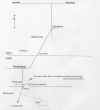
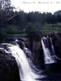
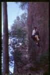
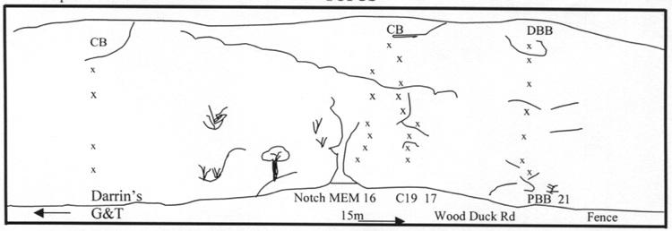
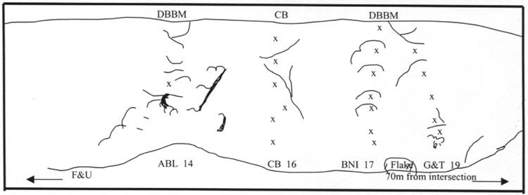
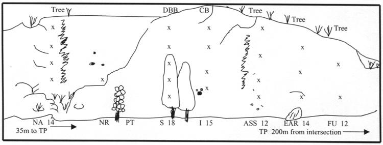

| Battery Hill (The Pines) Climbing Guide |
By Mark Churchill and Stephen Bishell, June
1999
Last
updated by Lee Cujes
5 December, 2006
|
|
|
INTRODUCTION
These notes were originally written for a group of friends. Some route
information was gleaned from an early guide on The Original Queensland Climbing
Reference, but all subsequent enquires failed to find accurate and comprehensive information for some of the climbs included here. We gave the routes a 'battery' name (crag is on Battery Hill) for ease of conversation and a grade. These climbs are marked with #. We also gave stars to some of our
favourites. If you have a copy of this
guidesheet and know of errors or omissions, or the correct information, please post it on www.qurank.com so that this can be remedied.
|
LOCATION
Urbenville is in NSW, 150 km south of Brisbane via Beaudesert. Turn R to Rathdowney at the traffic lights in Beaudesert. Through Rathdowney and past spectacular mountain scenery. 'Campbell's Folly', the cliffline just past Palen Creek is particularly
awesome, although it resides on private property. Drive on past Mt Lindsay and into NSW. At Woodenbong, turn L to Tabulam on McPherson Street. It is about 13 km to Urbenville. |
 |
| Above: Click for map |
|
From the supermarket, go 3.2 km along the main road to Tooloom Falls Rd on the L. Drive slowly through Bimbadeen Property watching for cattle on the road. Park (and go to the toilet) at the Falls area. Walk across the slippery causeway above the falls and take the first road (Beehive Rd) to the R. Continue on for about 1.5 km to Wood Duck Rd and turn L. It is about 500m to the cliff. The very pleasant walk takes about 25 minutes. If you're lazy, you can now drive through the gate (which is unlocked) and above the falls, all the way to the crag. The track steepens in the final 50m and is impassable in a 2x4 in the wet. |
 |
| Above:
Tooloom Falls |
ACCESS ISN’T A RIGHT
Battery Hill, aka The Pines, is situated in a commercial softwood plantation and access is very sensitive. The sign at the Falls says 'no access', so be discreet. Say hello to the caretaker when he visits you. He is aware of climbers and takes particular interest in our activities. As yet he has not stopped us from using the cliff, however, there are some rules to live by!
1. Use only the
designated access roads
2. Stay on the
cliff-side of the road at the site
3. Do not walk
amongst the pines
4. Do not smoke, take
matches, or a stove into this site.
If you must answer the call of nature do so in the native growth areas to the extreme L past Nice Volts or up to the R over the fence - anywhere but in the Pines! Try to find places where previous climbers have left the road to get up to the cliff base. This is to minimise damage. Obviously take care to minimize damage to the flora at the cliff base and on the face. Leave the wire brush at home. Lastly, limit group sizes. This site cannot handle more than a few climbers at a time.
CLIFF NOTES
The rock is igneous trachyte with sharp edges and pockets. Test all holds as there are still a few that break away under foot. Hopefully, this will become less common with traffic. The climbing is generally at less than vertical with steeper sections and bulges for interest. Most climbs have a section of small crystals and crimps to test your faith in sticky rubber. The friction quality is good, except in the lichen areas when damp.
There are several great learner leads to build confidence and skill. The protection is usually well placed and more than adequate. The bolts can be difficult to spot. The first one is usually at about 4m and then about 3m apart. A few pieces of natural protection, some (9) quickdraws and bolt plates are all that is required. Some fool has pulled several small trees at the top of a couple of climbs. You need some long anchor tapes to toprope some climbs that do not have a CB or
DBB. The site is home to goannas and redbelly black snakes. The goannas live near the climbs to the far L and are often seen climbing or on top of the cliff between Nice Volts and Itchy. Snakes have been encountered near Eff-A-Reddy and in the bush to the R as far back as A Bug’s Life. One is pretty big and likes to sun itself on the road in that area. The cliff faces north to northwest and gets hot. Take plenty of insect
repellent.
AMENITIES
The site does not have a toilet or drinking water supply. Carry in any water you need. Bury all waste and carry out all rubbish. The Tooloom Falls camping area is very basic with a longdrop dunny (no paper), level sites, fishing and the Falls to listen to at night. There are public toilets in Urbenville. Continue past the supermarket for 200m to the Hall on the L just past Stephen St (on R). Urbenville has a pub (rooms), supermarket (good for local information and petrol), police and post office. Woodenbong has a more entertaining pub and is usually worth the drive. Beaudesert has most everything you need and an
autoteller. There is a caravan park 25km south of Urbenville on the Tenterfield road for longer stays.
ABBREVIATIONS / LEGEND
|
BR
CB
DBB
DBBM
FH
FSA
L/R |
Bolt runner
Chain belay
Double bolt belay
DBB with mallion
Fixed hanger
Fool
Left/Right
|
x
^
*
#
|
Sport route (all bolts)
Fixed protection
Shared belay
Quality
Route name and grade given by the authors
(details unknown)
|
THE CLIMBS
Wood Duck Rd ends at a T-intersection at the base of the cliff. The distances along the road that parallels the cliff base are measured from this intersection. All directions for the climbs are given facing the cliff. Climbs are listed R to L. Walk L a short distance then go R up to the notch in the cliff for the first climbs. See
the topos.
* Copper Top 22m 19
5m right of Abandonment Issues. Follow left leaning line of five FH’s past flake and pockets. Shared belay with AI.
Colin Carstens, Joanna Parker 27/12/05
Abandonment Issues VS 7m 22
Start 3m to the R of original. Two FH's then up and L into Abandonment Issues.
Ross Ferguson, Gareth Llewellin, Ben Carter 25/02/2006
Abandonment Issues 22m 21
Steep start then nice slabby continuation. Will still be a bit lichenous for a while.
Ross Ferguson, Gareth Llewellin 14/5/05
Pink Bongo Bunny 22m 21
Start 5m left of AI. Climb up past approx six BR’s to DBBM.
Stephen Bishell, Mark Churchill 1/5/99
* Amped Up 24m 21
Start 15m left of Pink Bongo Bunny. Bouldery start to first FH. Continue up wall on easier holds (3 FH’s) to dished area below headwall. Take a deep breath and blast up headwall (3 FH’s) to DBBM.
Colin Carstens, Paul Elby 31/12/05
Short Circuit 23m 21
3m L of Amped Up is a line of 8 FH's. Thin holds through to 2nd FH. Then easier moves to base of headwall. Crimp your way over double bulge while keeping an eye out for the crucial jugs.
Paul Elby, Colin Carstens 19/03/06
Cat In Nine 40m 17
Start 6m R of notch past two BR's to small green-white face. Over this (BR on top), to slabby section (BR out to R for variant project - use long runner). Go high L to corner (two BR's). Step R onto wall and directly up to slab (two BR's). Up headwall on R of BR. CB on
MEM. (Direct route on top rope grade 21.)
Stephen Bishell, Mark Churchill 1/5/99
* Matt The Energizer Man
35m 15 #
Climb ramp on R of notch to BR on bulge at 4m. Up beside white streak past three BR's to stance L of CI9 corner. Step up L on short vertical wall
with ace buckets (BR) to long slab (BR). CB on headwall. A 60m rope reaches the ground on stretch.
* Heated Exchange 20m 14
Directly up slab L of notch past four BR's. Optional gear in pockets, too.
Darrin Carter 2001
Who's The Bunny Now 27m 18
4m right of Don't Trust the Bunny. Up past the bunny holes to first FH. Straight up crimping your way past a further six FH's to chains.
Ross Miller, Bernie Walsh 2/12/2006
Don't Trust The Bunny 24m 16
6m R of Yellow Brick Road. Up R of the rock orchards, through two steep sections on good holds. Seven FH's to chains.
Ross Miller, Richard Callf 30/4/2006
** Yellow Brick Road 25m 20
14m L of notch. Generic, but clean slab climbing past three black FH's to the base of bulge, which sports the final two FH's. This overhung section hosts a vital two-finger pocket and makes for quite a stunning conclusion. Finish at rap station at small stance.
Lee Cujes, Stephen Parker, Erik Smits 3/9/2000
Snail Trail 25m 26
R of Ginsu. Climbs the steep blank wall with the "snail trail" and five or six FH's, using very few very small crimps. Thin is the word.
Gareth Llewellin 3/6/06
|
** Ginsu 25m 24
6m L of YBR beneath a hard, smooth wall. Two BR's in the
first third (hard to see). Then four FH's to a chain belay.
Inspiration:
Darrin Carter 1999. Perspiration: Gareth Llewellin 2002
Life Isn't All Ha Ha He He 22m 25
2m L of Ginsu. Climbs the steeper section of the wall following six or seven
camouflaged FH's and a few crimps.
Ross Ferguson, Gareth Llewellin 4/6/06
Variable Resistance 24m 17
Sustained thin moves betwen 1st & 4th hangers give way to easier ground. Lay off the huge bollard to 5th hanger. Easy to chains. Solid 17.
Annette Miller, Ross Miller 19/2/04
|
 |
| Above:
Darrin working Ginsu on top rope |

The next four routes are 70m L from the intersection near a large, upright, detached flake at the base of the cliff. The cliff base is 5m in and the flake can be seen from the road.
** Ginger and Treacle 23m 19
1m R of flake. Up through pockets (optional gear) to slab and the first of five black FH's.
Onto steep section with big holds (FH). Mount wall and pockety moves to reachy FH.
Run it out a little to the security of a massive bucket below the fourth
FH. Over bulge to last FH and a tricky mantle to hit the chains.
Lee Cujes, Gareth Llewellin 2/5/99
* Batteries Not Included 23m 17 #
2m L of the flake. Up on good holds (4 BR's) to lumpy arête. Nice exposure past (3 BR's) to
DBBM.
* Carbon Black 23m 16 #
5m L of flake. Up the R-leaning weakness past 3 BR's to a stance. Step L (BR) and up steep section (BR) to easy climbing (BR) to CB.
A Bug’s Life 20m 14
Squash it! This was Grant's first new route. 6m L of CB. Up easily to crescent shape corner (small wires, small and medium cams). Leave crack on exposed move to ledge (FH). Boldly over ledges above to
DBBM. Worth the effort if you’re homesick for Kangaroo Point or you carried in some pro and must use it no matter what!
Grant LeLeve (sp?), Darrin Carter 2/5/99

About 200m L of the intersection are two pines growing at the base of the cliff just L of a clean slab. There is a detached flake 8m R of the two pines. For interests sake, the original 5 climbs here were the first routes done in the Pines, and were done by
Alistair Byrom and Ken Cox, but are not in the original guide.
Flat And Useless
10m 13 #
5m R of flake. 2 BR's on very end of slab. Very runout above 2nd BR, possible ground strike. Poor belay on trees or traverse L to shared lower-off.
Alistair Byrom, Ken Cox
Connected In Series 20m 14
Up F&U's BR's. Then go high L to last BR on EAR. Continue L to last on ASS, then up to belay. Could have been original intent for FU?
Mark and Ricci Churchill 1/5/99
Eff-A-Reddy 18m 13 #
Start on detached flake. Clip BR and launch onto wall. Over bump (BR) and follow jugs (BR) trending R. Then up to shared lower-off.
Alistair Byrom, Ken Cox
* A Sighing Sea Of Softwoods Swaying In Spring Sex 18m 12 #
Great learner lead. Pockets 5m R of Itchy. Direct line staying R of runnel past 4 BR's to shared lower-off.
Alistair Byrom, Ken Cox
Ohm Sweet Ohm 16m 16
A line of 5 FH's to the R of Itchy. Thin moves to 2nd FH and continue over bulge on good holds.
Julie Stanton, Colin Carstens, Joanna Parker 18/03/06
** Itchy 18m 15 #
Great learner lead. 1m R of the two pines are 3 pockets that look like Mickey Mouse. Up to pockets and on to next BR. Crux moves to and over the next BR lead to jugs and vertical section (BR). Over this to good CB on back wall of ledge.
Alistair Byrom, Ken Cox
* Specific Gravity 18m 17
The crux provides some interesting crimping up an arete.
Richard Callf, Ross Miller 19/2/05
Scratchy 18m 18 #
The line of five BRs behind the pine tree. Finish at DBB.
Alistair Byrom, Ken Cox
Candle Power 18m 13
6m left of S is a line of five FH's to DBBM. Boulder up to first hanger from L and mantle onto ledge using a little muscle power. Continue up wall on good holds staying L of third hanger.
Michelle Riedlinger, Colin Carstens 26/02/06
Loaded on Lithium 15m 14
3m L of Candle Power. Up short steep wall on good holds. Good warm up or for newer leaders. Three FH's to chains.
Annette Miller, Natasha Laurens 30/4/2006
Positively Terminal 20m 10
Tricked into a solo by Sandbag Sam. Up wall just R of tree with large leaves about 15m L of the two pines. At top of wall trend L to start of R leading ramp. Up this to wall 3m from top. Straight up wall. No pro. "Why did you do that?" "Cause I’m stupid."
FSA Mark Churchill
It appears that the next four routes all starts on the round buttress 35m L of two pines.
Not Rechargeable 16m 18
Scramble up short wall as for NASATV to large ledge. At RH end of ledge there is a BR at chest height. Belay from here. Up face to two large holes passing a BR (wasps have been removed). Continue up wall passing 3 BR’s to CB shared with LV.
Alistair Byrom, Ken Cox
* Low Voltage 16m 14
Start 4m left of NR at RH end of large ledge. Can belay from 1st bolt of NR. Follow line of 5 FH’s to shared CB with NR.
Colin Carstens, Bernard Walsh 30/12/05
Electrolyte 22m 15
Scramble 6m up to large ledge. First FH below large hole (wasps removed). Continue through bulge passing 3 more FH’s to CB shared with NASATV. Be warned of ants at 2/3 height.
Bernard Walsh, Colin Carstens 30/12/05
Nice Acid, Shame About The Volts 22m 14 #
Scramble 6m up to large ledge and clip BR on LH end of ledge at head height. Up easily, staying L of dark stain passing 3 BR’s to shared CB with E.
Alistair Byrom, Ken Cox

|
{kind=link}
{kind=link}
{kind=link}
{kind=link}
{kind=link}
{kind=link}
{kind=link}
{kind=link}
{kind=link}